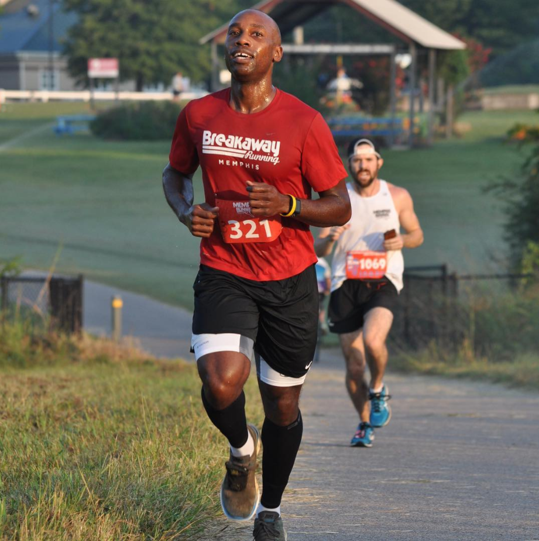

My Hobbies
Hobbies
- I love running. I am a member of my local running club. 10k is my favorite race distance.
- Traveling is a major factor in my life. I love learning about new cultures and making new friends in other parts of the world.
- I have been gaming since I was a kid. I grew up on Nintendo, playing games with friends.
- I love bowling whenever I get the chance. I was on a bowling team in school.
